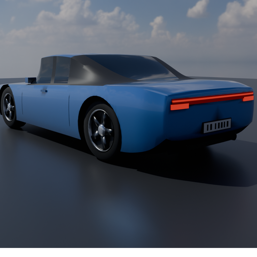
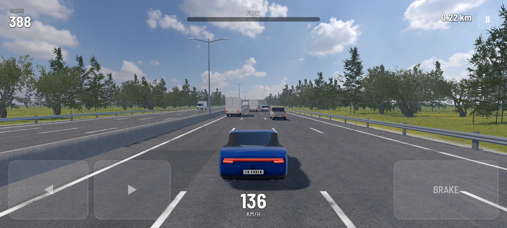
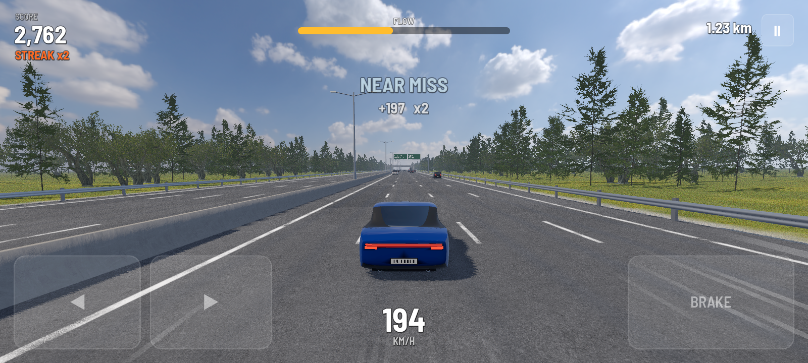

FLOWLINE
Weave through traffic.
Stay in the Flow.
FLOWLINE is a highway racing game for phones. Pass close to traffic to build Flow. Fill the meter and Flow Drive doubles every point – until you bump into something.
Download for AndroidFree test version · about 60 MB · Android 7 or newer, 64-bit phones · iPhone version coming later
Simple controls
The car accelerates by itself. Left thumb steers, right thumb brakes.
Near misses pay
The closer the pass, the bigger the bonus. Chain them for a streak.
Real highway
Sign gantries, bridges, oncoming traffic and a real sky.
How to install on Android
- Open this page on your phone and tap Download for Android.
- When the download finishes, tap the file flowline.apk (or find it in Files → Downloads).
- If Android says apps from this source aren't allowed, tap Settings, switch on Allow from this source, then go back.
- Tap Install, then Open. Turn the phone sideways and tap DRIVE.
New test versions install over the old one; your best score is kept.
